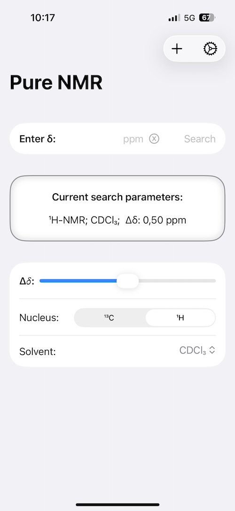
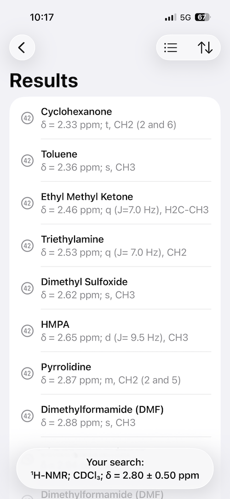
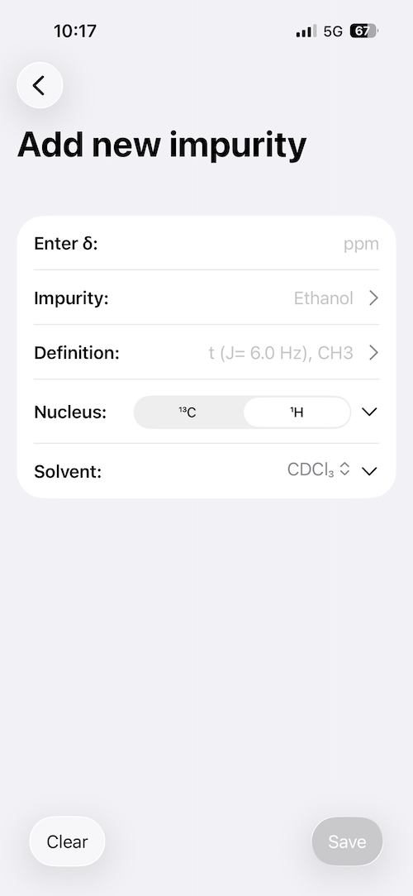
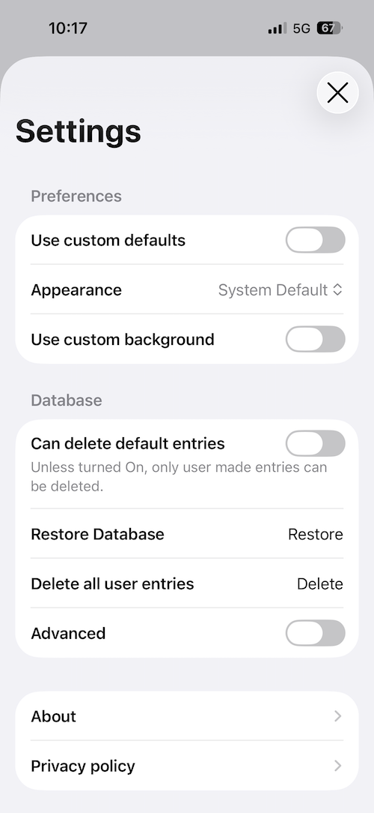

<style>
    /* Header */
    header {
        padding: 100px 30px 80px;
        text-align: center;
        background: #fafbfc;
    }
    
    h1 {
        font-size: 3.2em;
        margin-bottom: 20px;
        font-weight: 600;
        color: #1a1a1a;
        letter-spacing: -0.5px;
    }
    
    .subtitle {
        font-size: 1.3em;
        color: #5a6c7d;
        margin-bottom: 15px;
        font-weight: 400;
    }
    
    .meta {
        font-size: 1em;
        color: #7a8a9a;
        margin-bottom: 40px;
    }
    
    .download-btn {
        display: inline-block;
        background: #000000;
        color: white;
        padding: 14px 40px;
        text-decoration: none;
        border-radius: 8px;
        font-weight: 500;
        font-size: 1em;
        transition: background 0.2s;
    }
    
    .download-btn:hover {
        background: #333333;
    }
    
    /* Main Content */
    section {
        padding: 70px 30px;
    }
    
    section:nth-child(even) {
        background: #fafbfc;
    }
    
    h2 {
        font-size: 2em;
        margin-bottom: 40px;
        font-weight: 600;
        color: #1a1a1a;
        text-align: center;
    }
    
    /* Features */
    .features-list {
        max-width: 800px;
        margin: 0 auto;
    }
    
    .feature {
        margin-bottom: 50px;
    }
    
    .feature h3 {
        font-size: 1.4em;
        margin-bottom: 12px;
        color: #2c3e50;
        font-weight: 600;
    }
    
    .feature p {
        font-size: 1.05em;
        color: #5a6c7d;
        line-height: 1.7;
    }
    
    /* Calculations */
    .calc-grid {
        display: grid;
        grid-template-columns: repeat(auto-fit, minmax(280px, 1fr));
        gap: 20px;
        max-width: 900px;
        margin: 0 auto;
    }
    
    .calc-item {
        background: #ffffff;
        border: 1px solid #e0e0e0;
        padding: 25px;
        border-radius: 6px;
        font-size: 1.05em;
        color: #2c3e50;
    }
    
    section:nth-child(even) .calc-item {
        background: #ffffff;
    }
    
    /* Screenshots */
    .screenshot-grid {
        display: flex;
        justify-content: center;
        gap: 30px;
        flex-wrap: wrap;
        margin-top: 50px;
    }
    
    .screenshot-placeholder {
        width: 240px;
        height: 520px;
        border-radius: 20px;
        box-shadow: 0 4px 12px rgba(0,0,0,0.1);
    }
    
    @media (max-width: 768px) {
        h1 {
            font-size: 2.2em;
        }
        
        .subtitle {
            font-size: 1.1em;
        }
        
        h2 {
            font-size: 1.6em;
        }
    }
</style>

<!-- Header -->
<header>
    <div class="container">
        
        <h1>Pure NMR</h1>
        <p class="subtitle">NMR Impurity Reference for iOS</p>
        <p class="meta">Free • No Ads • No Data Collection</p>
        <a href="https://apps.apple.com/de/app/pure-nmr/id482490330?l=en-GB" class="download-btn">Download on the App Store</a>
    </div>
</header>

<!-- About -->
<section>
    <div class="container">
        <h2>Purpose</h2>
        <div class="features-list">
            <div class="feature">
                <p>Pure NMR is a comprehensive reference tool for identifying common impurities in NMR spectra. It provides quick access to chemical shift data for residual solvents and common laboratory impurities across multiple deuterated solvents and nuclei. The application requires no account, collects no data, and functions purely as a reference database.</p>
            </div>
        </div>
    </div>
</section>

<!-- Why I Made This -->
<section>
    <div class="container">
        <h2>About This Project</h2>
        <div class="features-list">
            <div class="feature">
                <p>I developed Pure NMR as a mobile companion to the widely-cited publications by Fulmer et al. (Organometallics 2010) and Gottlieb et al. (J. Org. Chem. 1997). These papers are essential references in any NMR spectroscopy lab, but constantly looking up chemical shifts in printed tables or PDFs is inconvenient during routine spectral analysis.</p>
                <p>The app remains free and ad-free because it serves the scientific community. It's a practical tool for students learning NMR interpretation and for experienced researchers who want quick reference data at their fingertips. No monetization, no data collection, no complexity—just fast access to reliable chemical shift information.</p>
            </div>
        </div>
    </div>
</section>

<!-- Features -->
<section>
    <div class="container">
        <h2>Features</h2>
        <div class="features-list">
            <div class="feature">
                <h3>Comprehensive Database</h3>
                <p>Complete chemical shift data for common impurities in all standard deuterated solvents. Includes both ¹H and ¹³C NMR data based on peer-reviewed literature.</p>
            </div>
            <div class="feature">
                <h3>Smart Search</h3>
                <p>Search by chemical shift value with adjustable tolerance. Quickly identify unknown peaks in your spectra by matching them against the database.</p>
            </div>
            <div class="feature">
                <h3>Custom Entries</h3>
                <p>Add your own chemical shift data for compounds specific to your research. Create a personalized reference library alongside the built-in database.</p>
            </div>
            <div class="feature">
                <h3>Multiple Solvents & Nuclei</h3>
                <p>Filter by solvent and nucleus to see only relevant data for your experiments. Supports all common deuterated solvents and both ¹H and ¹³C nuclei.</p>
            </div>
            <div class="feature">
                <h3>Privacy Focused</h3>
                <p>No user accounts. No data collection. No analytics. The application operates entirely offline and stores no information about your searches or usage patterns.</p>
            </div>
        </div>
    </div>
</section>

<!-- Calculations -->
<section>
    <div class="container">
        <h2>Supported Solvents</h2>
        <div class="calc-grid">
            <div class="calc-item">Chloroform-d (CDCl₃)</div>
            <div class="calc-item">DMSO-d₆</div>
            <div class="calc-item">Acetone-d₆</div>
            <div class="calc-item">Methanol-d₄</div>
            <div class="calc-item">Acetonitrile-d₃</div>
            <div class="calc-item">Benzene-d₆</div>
            <div class="calc-item">D₂O</div>
            <div class="calc-item">THF-d₈</div>
            <div class="calc-item">Toluene-d₈</div>
            <div class="calc-item">Dichloromethane-d₂</div>
            <div class="calc-item">Chlorobenzene-d₅</div>
            <div class="calc-item">TFE-d₃</div>
        </div>
    </div>
</section>

<!-- Screenshots -->
<section>
    <div class="container">
        <h2>Interface</h2>
        <div class="screenshot-grid">
            
            
            
            
        </div>
    </div>
</section>
